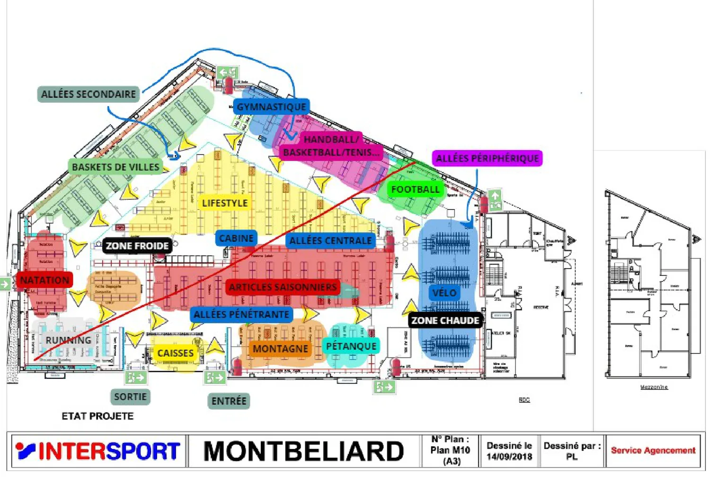
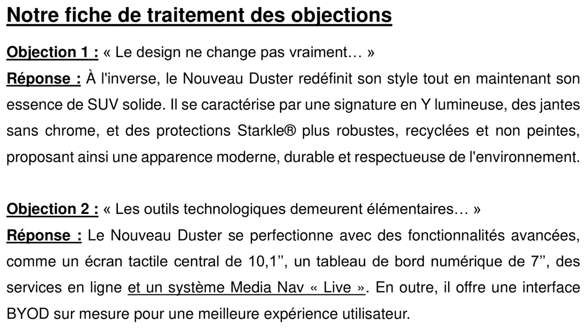

Achats, vente et relation client · BC5 · BUT 2
Niveau 1 : Mettre en place la politique d’achat et de distribution
Niveau attendu en deuxième année : intermédiaire. 6 apprentissages critiques, chacun avec ce qu’il recouvre, la situation où je l’ai travaillé et mes traces.
Apprentissages critiques du niveau 1
- AC25.01MCMO
Définir une politique de distribution conforme à la stratégie de l’organisation pour développer sa clientèle
Choisir les circuits et les canaux de vente, directs ou indirects, physiques ou en ligne, qui permettront d’atteindre la clientèle visée.
Au DCF, la distribution découle des cibles : des boutiques Ray-Ban pour faire essayer un produit nouveau, des places de marché comme Amazon, l’Apple Store ou la Fnac pour l’accessibilité, des revendeurs high-tech pour toucher les technophiles, des pop-up stores et des salons pour tester avant d’acheter, et, pour les professionnels, la vente aux entreprises et aux opticiens. Pour NORMAL CTM Corporation, une plateforme en ligne utilisable sur mobile, complétée d’ateliers en présentiel. Pour CAP Alpes Provence, les réponses au questionnaire nous ont orientés vers Booking et Airbnb, où réservent 80,8 % des jeunes sportifs interrogés, et vers des partenariats de trois ans avec des clubs.
TracesDossier DCF, réseaux de distribution (binôme)Dossier final Les Entrep’ (groupe)PDFDossier National GACO Game (groupe)PDF

Distribution omnicanale de Ray-Ban Meta : chaque canal, sa raison d’être et ses actions. - AC25.02MCMO
Faire des recommandations pour l’implantation d’un point de vente, en fonction des analyses du marché et de la zone de chalandise
Étudier la zone de chalandise, la concurrence locale et les flux de clientèle pour recommander l’emplacement d’un point de vente.
Chez Intersport Montbéliard, nous avons situé le magasin sur son marché local : installé depuis trente ans dans la zone commerciale du Pied des Gouttes, avec 2 314 m² de vente, 34 univers et 300 à 400 visiteurs par jour, face à Décathlon, Sport 2000 et Leclerc Sport, que nous avons comparés sur l’aménagement, la digitalisation, les offres, le service et les animations. Nous l’avons aussi positionné face aux autres magasins de son groupe, canal par canal et univers par univers, puis analysé le plan d’agencement prévu pour l’été-automne 2025 : le Running rapproché de l’entrée, le Football et le Vélo agrandis, le Lifestyle réduit pour élargir les allées.
Avec le recul, notre travail porte sur un magasin déjà implanté : la zone de chalandise elle-même, population, temps d’accès, flux, n’a pas été mesurée, et c’est l’étape qui manque pour recommander un emplacement.
TracesDossier de merchandising Intersport, décembre 2024 (trinôme, non publié)Diagnostic stratégique d’Intersport Montbéliard (trinôme)PDF
- AC25.03MCMO
Déterminer les facteurs de pérennisation du point de vente, en utilisant les techniques de merchandising et de communication
Identifier ce qui fera durer un point de vente : merchandising, animation commerciale, communication locale et qualité de l’accueil.
Le dossier de merchandising d’Intersport Montbéliard, mené en trinôme, commence par l’audit du magasin avec la check-list des fondamentaux de l’enseigne. Sur le plan du magasin, nous avons délimité les univers, tracé le sens de circulation, repéré zones chaudes et zones froides, allées, caisses et cabines. Nous avons ensuite proposé de quoi faire vivre la surface de vente : produits d’appel et articles phares dès l’entrée, achats d’impulsion près des caisses, flèches au sol inspirées d’IKEA pour faire parcourir tout le magasin, étiquettes « vu sur TikTok » pour les produits tendance, présentoirs aux intersections où le client ralentit. Le diagnostic stratégique y ajoute la fidélisation : programme à points, espace « Made in France » autour des vélos Nakamura, journée Intersport Day avec une école de sport locale. En trade marketing, des TD individuels m’ont entraîné à l’agencement, à l’implantation, aux opérations promotionnelles et aux animations commerciales.
TracesDossier de merchandising Intersport (trinôme, non publié)Diagnostic stratégique d’Intersport Montbéliard (trinôme)PDFTD de trade marketing (individuel)

Plan du magasin annoté en trinôme : univers, circulation, zones chaudes et froides, allées, caisses. - AC25.04MCMO
Participer à la politique d’achats
Contribuer aux choix d’achat de l’organisation : définir le besoin, rechercher et sélectionner des fournisseurs, comparer les offres en coût global, suivre l’exécution des contrats.
En stage au service des achats généraux de l’HNFC, j’ai participé à la politique d’achat d’un établissement public, dans le cadre de la commande publique. Pour le bloc opératoire, dont les nouveaux bandeaux en microfibre absorbaient mal le sang, j’ai précisé le besoin avec la cadre de santé, obtenu des contacts auprès des approvisionneurs, écrit à six fournisseurs et suivi leurs réponses dans un tableau : un a décliné, trois ont répondu favorablement, deux ont envoyé des échantillons, que j’ai transmis au bloc avec une fiche de test. Pour la crèche, avec 800 € par an pour les jouets, j’ai défendu un achat responsable : moins d’articles, mais certifiés et sans perturbateurs endocriniens. J’ai aussi comparé des devis d’armoires à linge face au prestataire actuel, demandé un devis pour un bavoir validé après huit lavages, et assisté à une réunion sur le cahier des charges de la future centrale de la blanchisserie.
Avec le recul, à la fin du stage, deux missions restaient ouvertes, l’avis du bloc sur les échantillons et la liste écrite des besoins de la crèche ; un achat ne se boucle pas au rythme d’un stage, et mon rapport prévoit de les poursuivre en alternance.
TracesRapport de stage, missions 2 à 6 (non publié)Tableau de suivi des fournisseurs (document interne, non publié)Comptes rendus des rendez-vous (non publiés)
- AC25.05MCMO
Négocier en processus achat, en utilisant les techniques d’achat et de communication orale, et en mettant en œuvre des qualités personnelles propices pour convaincre
Mener une négociation face à un fournisseur pour obtenir les meilleures conditions de prix, de délai et de qualité, en restant convaincant et ferme sans rompre la relation.
En stage, j’ai mené une réclamation auprès d’un fournisseur : un lot de bracelets pour nouveau-nés dégageait une odeur inhabituelle. J’ai envoyé un mail précis, avec la référence et le numéro de lot, puis appelé pour expliquer le problème sans mettre le fournisseur en accusation ; il a pris acte, et l’approvisionneuse a suivi le dossier jusqu’au remplacement des lots. Pour les bandeaux du bloc opératoire, il fallait obtenir des échantillons à tester : deux fournisseurs sur six en ont envoyé. En négociation commerciale, le cas Dacia Duster m’a entraîné, à quatre, à répondre aux objections, un design jugé peu changé, une technologie jugée élémentaire, chacune par une réponse appuyée sur une preuve.
Avec le recul, je n’ai pas encore négocié un prix ou un délai face à un fournisseur ; c’est le cœur du métier d’acheteur que je vise.
TracesRapport de stage, mission 3 (non publié)Dossier de négociation Dacia Duster (groupe)PDF

Fiche de traitement des objections du cas Dacia Duster. - AC25.06MCMO
Préparer la négociation en utilisant les informations utiles à la connaissance du client ou du prospect et en concevant des supports préparatoires
Arriver préparé : connaître l’interlocuteur et son marché, fixer ses objectifs et ses limites, anticiper les objections et préparer ses supports.
Ma fiche de préparation d’un entretien de vente part de l’interlocuteur : le chef du service technique d’une mairie, qui veut terminer l’aménagement extérieur d’une salle polyvalente et doit tenir son budget et les normes d’accessibilité. J’y ai fixé mon objectif, obtenir un engagement, et mes appuis : catalogue, fiches techniques, paiement échelonné, échantillon à tester. Pour le cas Dacia Duster, nous avons préparé à quatre tout le dossier de l’entretien : présentation du groupe et de la concession de Montbéliard, plan de découverte du client, de son véhicule actuel à son budget, argumentaire, fiche des concurrents MG ZS et Citroën C3 Aircross, et synthèse SONCAS des arguments selon la motivation du client. En anglais, j’ai rédigé un argumentaire de vente pour un stylo, appuyé sur une fiche produit.
TracesFiche de préparation de l’entretien de vente (individuel)PDFDossier de négociation Dacia Duster (groupe)PDFArgumentaire de vente en anglais (individuel)

Fiche de préparation d’un entretien de vente : l’interlocuteur, ses attentes, mes objectifs et mes moyens. 
Synthèse SONCAS du cas Dacia Duster : l’argument à utiliser selon la motivation du client.


Bilan du niveau 1
Points forts : une première expérience réelle des achats publics hospitaliers, du sourcing à la réclamation fournisseur et à l’achat responsable, et des outils de préparation de la vente que je sais construire.
À renforcer : la négociation de prix et de délais face à un fournisseur, que je n’ai pas encore menée.
Pour la suite : au niveau 2, piloter la relation client et, en alternance au service achats de l’HNFC, mener mes premières négociations avec les fournisseurs.